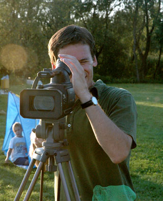

The Balaton Monks
Filmmaker's Bio

Mark Edgington is a graduate of Yale and the NYU Graduate Film program. His first film, The Death of Mr. Frick & Other
Hardships
was selected for the Channel Four (UK) Young Filmmaker of the Year competition and won numerous awards. Anna in the Sky ("haunting",
New York Times) premiered at Sundance and was seen at over seventy international film festivals. A feature script, Satellites, won the $25,000 Minnesota Independent Film Fund Award. He also co-wrote the feature film Sunburn, which premiered at the 1999 Toronto International Film Festival and introduced Cillian Murphy to film audiences.
Filmography
- 2008 The Balaton Monks (13 min.)
- 2007 Security (14 min.)
- 1999 Sunburn (89 min.) (writer)
- 1997 Anna in the Sky (10 min.)
- 1992 The Death of Mr. Frick & Other Hardships (35 min.)